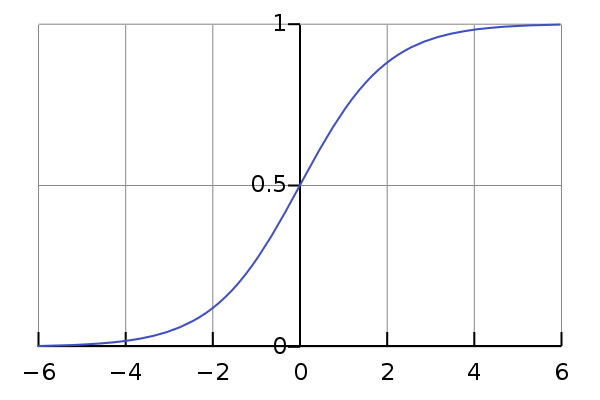
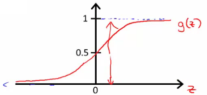

sigmoid 英 ['sɪgmɔɪd] 美 ['sɪgmɔɪd] adj.S形的，C形的； n.S形，S状弯曲；
A sigmoid function is a mathematical function having a characteristic "S"-shaped curve or sigmoid curve. Often, sigmoid function refers to the special case of the logistic function shown in the first figure and defined by the formula $$ S(x) = \frac{1}{1+e^{-x}} = \frac{e^x}{1+e^x} $$ $$ h_{\theta}(x) = g(\theta^T X) = \frac{1}{1+e^{-\theta^T X}} $$
 